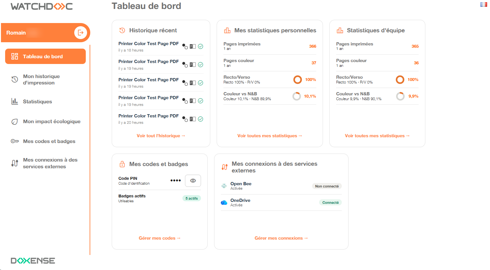
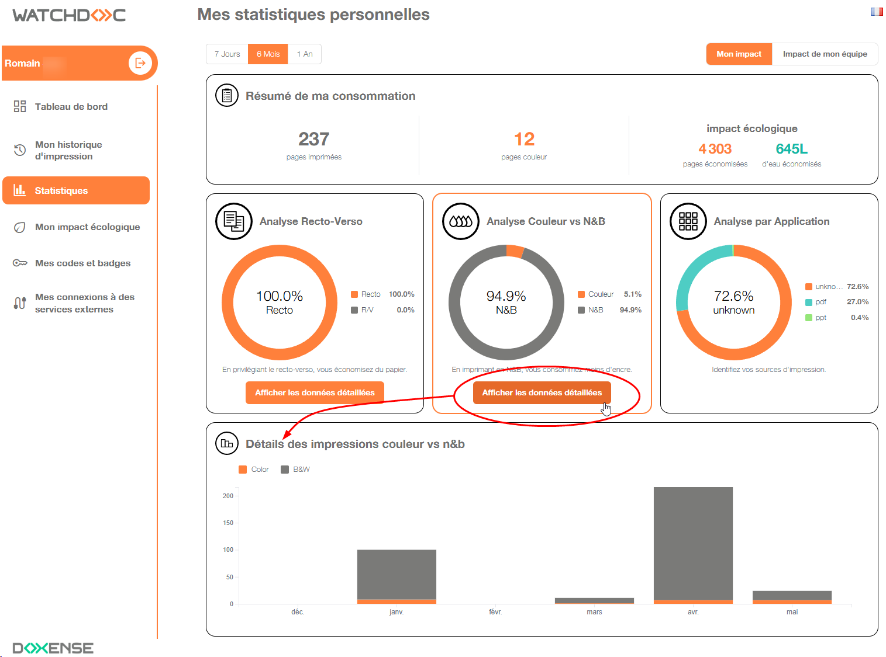
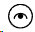
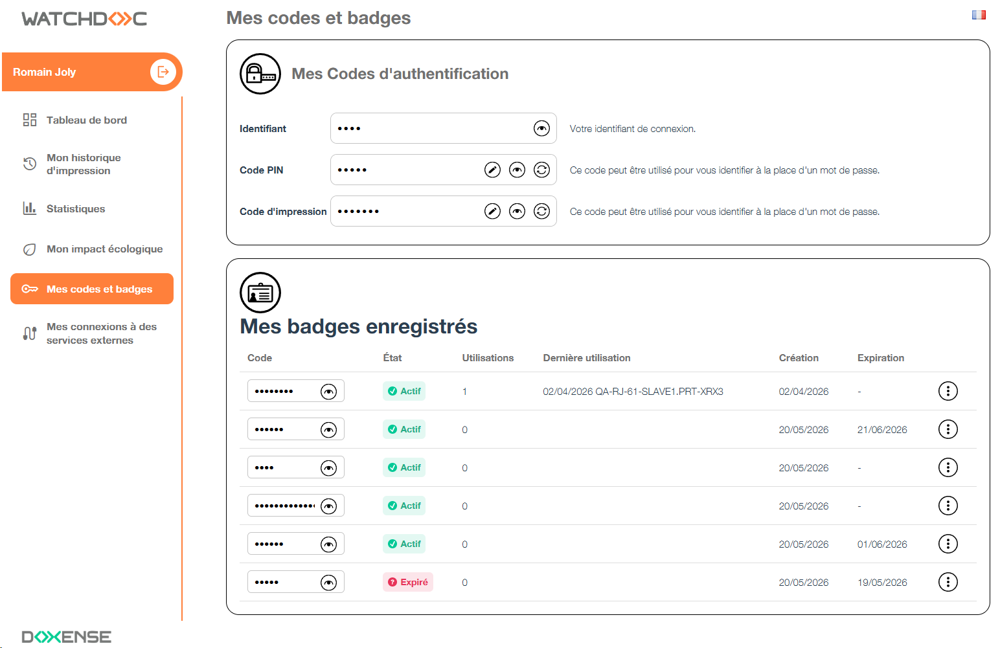
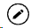
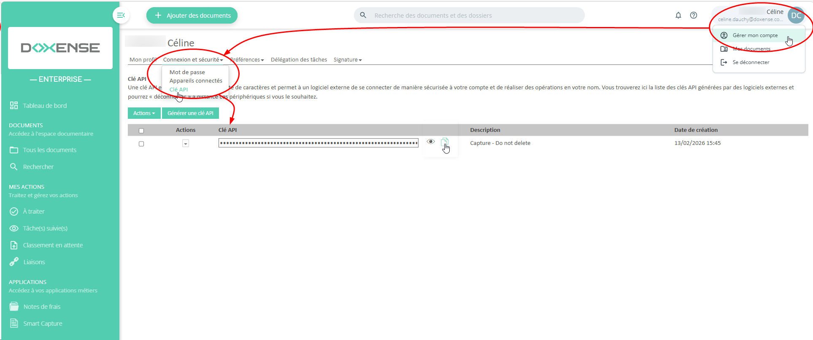
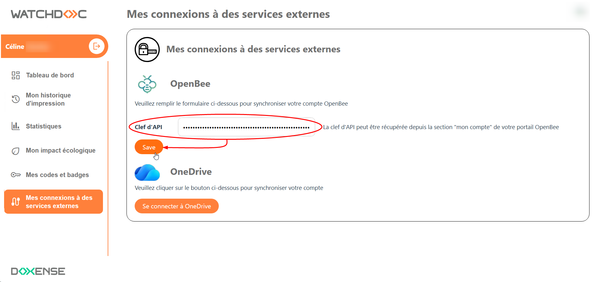
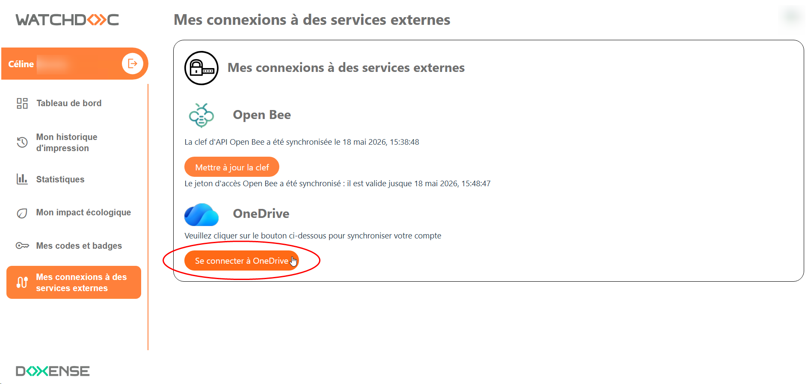
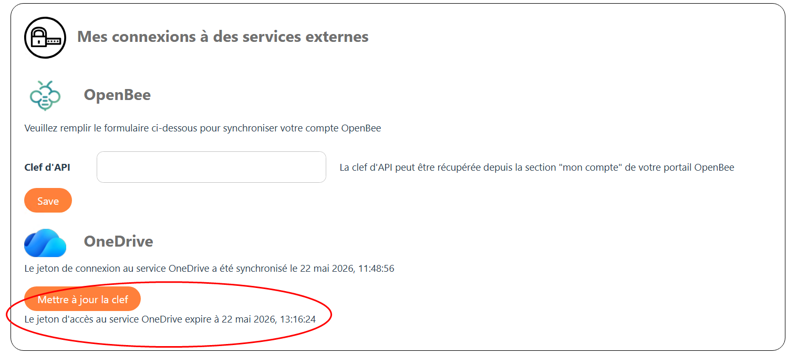

Watchdoc - Utilisateur - Consulter la page "Mon compte" v. 2
Présentation
La page "Mon compte" est l'interface web de Watchdoc dédiée à l'utilisateur. Cette interface est déclinée en deux versions : l'ancienne et la nouvelle (v. 2), dans les versions antérieures à Watchdoc v. 6.1.1.5612.
Quelle que soit la version utilisée, son url est généralement communiquée par le référent Watchdoc à l'ensemble des utilisateurs.
Configurée par l'administrateur, elle peut proposer des usages variés. Elle peut donc vous permettre de consulter :
-
vos données d'identification telles que vos codes d'identification et badges ;
-
l'historique de vos impressions ;
-
les statistiques de vos impressions et des impressions de votre équipe ;
-
le détail de vos quotas d'impression ;
-
les documents que vous avez archivés ;
-
les connexions à des services externes (tels que des espace de stockage).
M'authentifier dans la page "Mon compte"
Pour accéder à la page "Mon compte", vous devez vous authentifier. La manière dont vous vous authentifiez varie en fonction de la configuration définie par votre administrateur :
-
Login et mot de passe ;
-
Intégrée Windows : ce mode permet de vous authentifier à l'aide de votre compte MS Windows®;
-
Externe : ce mode permet de vous authentifier à de votre compte défini dans un annuaire externe (tel que Entra ID, par exemple) ;
{kind=link}
En cas d'incertitude sur le mode d'authentification, contactez votre administrateur Watchdoc.
èUne fois authentifié, vous accédez à votre Tableau de bord : 
{kind=link}
Consulter mon historique d'impression
Pour consulter l'historique de vos dernières impressions :
-
dans le menu, cliquez sur Mon historique d'impression ;
èdans la liste Historique de vos derniers documents figurent tous les documents dont vous avez demandé l'impression. Le nombre de documents présents dans la liste varie en fonction de la configuration définie par l'administrateur.
-
la liste comporte différents indicateurs (leur ordre varie en fonction du paramétrage :
-
un pictogramme indiquant le type/format du document (.pdf, .txt,, .doc, .xls, .jpg, etc.)
-
le Nom du document. Ce nom peut être un titre générique ("mon document") si l'administrateur a activé la fonction "remplacer le titre" ;
-
la date d'impression ;
-
le nom de l'imprimante qui a traité l'impression ;
-
le nombre de pages imprimées ;
-
le mode de couleur du document : couleur ou
 noir & blanc ;
noir & blanc ; -
le mode recto ou recto/verso
-
l'état du document :
- imprimé ;
- supprimé : indique un document supprimé soit par vous-même, soit automatiquement en raison d'une politique d'impression spécifique ;
-
expiré : indique un document supprimé après être resté au-delà de la "durée de vie" configurée pour la file sans avoir été explicitement imprimé ou supprimé
-
Consulter mes statistiques
En fonction de la politique d'impression appliquée dans votre organisation, vous pouvez avoir accès à vos statistiques personnelles ou à vos statistiques personnelles ainsi que les statistiques de votre équipe.
Statistiques personnelles
-
Dans le menu, cliquez sur Statistiques ;
-
dans la page Mes statistiques personnelles, cliquez sur l'un des boutons 7 jours, 6 mois ou 1 an pour afficher les statistiques de la période choisie ;
èvos données statistiques s'affichent sous forme de graphiques ;
-
si vous souhaitez plus d'informations, cliquez sur le bouton Afficher les données détaillées :

-
cliquez sur l'onglet Mes Statistiques : vous accédez à une interface qui affiche vos données d'usage de Watchdoc et l'impact environnemental qui en découle :
{kind=link}
Statistiques d'équipes
Si vous appartenez à une équipe configurée dans Watchdoc, vous pouvez en consulter vos statistiques parmi celles de votre équipe.
-
Depuis le menu, cliquez sur Statistiques ;
-
dans l'interface Mes Statistiques personnelles, cliquez sur le bouton Impact de mon équipe :
è vous accédez à la page affichant les statistiques d'impression de l'ensemble de votre équipe.
Consulter mon impact écologique
Les informations affichées dans cette interface visent à établir le rapport de votre activité d'impression sur l'environnement selon des modes de calculs et données fournis par l'ADEME Établissement public à caractère industriel et commercial (EPIC) placé sous la tutelle du ministère en charge de l’environnement, de l’énergie et de la recherche.
Chargé de favoriser la protection de l'environnement, les économies d'énergie et le développement des énergies renouvelables, il agit auprès des particuliers, professionnels et collectivités pour sensibiliser et informer sur les enjeux climatiques et énergétiques.
Il finance également des projets innovants d’infrastructure dans le domaine de la transition énergétique et écologique, aux côtés d’investisseurs privés.
(Source : https://www.ademe.fr/lagence).
Établissement public à caractère industriel et commercial (EPIC) placé sous la tutelle du ministère en charge de l’environnement, de l’énergie et de la recherche.
Chargé de favoriser la protection de l'environnement, les économies d'énergie et le développement des énergies renouvelables, il agit auprès des particuliers, professionnels et collectivités pour sensibiliser et informer sur les enjeux climatiques et énergétiques.
Il finance également des projets innovants d’infrastructure dans le domaine de la transition énergétique et écologique, aux côtés d’investisseurs privés.
(Source : https://www.ademe.fr/lagence).
-
Dans le menu, cliquez sur Mon impact écologique ;
-
dans la page Mon impact écologique, sélectionnez la période (7 jours, 6 mois ou 1 an) dont vous souhaitez afficher les statistiques ;
-
l'encart Synthèse affiche vos données d'impression transcrites en données énergétiques (eau, électricité, arbres et CO2 émis) ;
-
l'encart Vos actions font la différence affiche les économies réalisées grâce aux suggestions proposées par votre organisation lors de l'impression. Par exemple, lorsque vous avez accepté d'imprimer en noir & blanc plutôt qu'en couleur, en recto-verso plutôt qu'en recto ou en un seul exemplaire plutôt qu'en trois :
-
{kind=link}
Consulter mes codes et badges
Consulter
-
Dans le menu, cliquez sur Mes codes et badges ;
-
Dans cette interface :
-
l'encart Mes codes d'authentification contient plus ou moins de codes (PIN, PUK, d'impression) en fonction de la configuration appliquée par l'administrateur. Si le code est masqué, cliquez sur le bouton Voir
 pour l'afficher
pour l'afficher 
pour les afficher en clair ; -
l'encart Mes badges enregistrés contient le ou les badges que vous êtes en mesure d'utiliser pour vous identifier sur un WES.
Ces badges peuvent avoir plusieurs statuts :-
actif : badge utilisable jusqu'à la date de péremption affichée ;
-
expiré : badge utilisé, mais désormais inactif car ayant dépassé la date de péremption ;
-
verrouillé : badge que vous avez verrouillé et que vous pouvez déverrouiller ;
-
perdu : badge que vous avez déclaré perdu ;

-
{kind=link}
Saisir mon code PIN et/ou code d'impression
Si vous devez vous authentifier dans le WES à l'aide d'un code PIN ou d'un code d'impression, c'est à vous de le définir dans la page "Mes codes et badges" :
-
code PIN : code constitué de 4 chiffres minimum (longueur précisée par l'administrateur) ;
ou
-
code d'impression : code alphanumérique qui doit comporter entre 4 et 16 caractères et ne doit pas contenir plus de 2 chiffres(longueur précisée par l'administrateur).
Pour saisir votre code(PIN ou d'impression) :
-
dans la page Mon compte, cliquez sur l'onglet Mes codes et badges ;
-
cliquez sur le bouton Editer

du code PIN ou d'impression ; -
saisissez votre code dans le champ ;
-
cliquez sur le bouton Valider.
Connecter des services externes
Principe
Si vous disposez d'un espace de stockage externe (tels que OneDrive ou Open Bee, par exemple), vous pouvez les ajouter depuis la page Mon compte comme destinations de vos numérisations.
Ainsi, les documents que vous numérisez avec WEScan peuvent être envoyés directement dans ces espaces de stockage tiers.Vous pouvez ensuite vous connecter dans ces espaces tiers afin de traiter à votre document numérisé
le traitement que vous souhaitez (classement, envoi dans un autre workflow, archivage...).
Connecter mon compte Open Bee®
Copier la clé API d'Open Bee®
Pour associer votre compte Open Bee®, vous devez disposer de sa Clé API.
Cette clé API se trouve dans votre espace Open Bee® :
-
accédez et authentifiez-vous dans votre espace Open Bee® ;
-
dans votre espacee, cliquez en haut à droite sur votre profil afin d'accéder au menu ;
-
dans ce menu, cliquez sur Gérer mon compte ;
-
dans l'interface Mon compte, cliquez sur l'entrée Connexion et sécurité ;
-
soucliquez ensuite sur Clé API ;
-
dans l'interfae Clé API, la clé s'affiche dans un champ de saisie, masquée pour plus de sécurité ;
-
cliquez sur le bouton Copier situé à droite du champ ;
-
conservez cette donnée dans le presse-papier de votre poste de travail ou collez-le dans un éditeur de texte :

{kind=link}
Configurer la connexion à Open Bee®
-
Accédez et authentifiez-vous dans votre page Mon compte ;
-
dans la page Mon compte, cliquez sur l'onglet Mes connexions à des services externes :
-
dans l'interface Mes connexions à des services externes, section Open Bee, cliquez sur le bouton Mettre à jour la clef :
-
dans le champ Clef d'API, collez la clef préalablement copiée ;
-
cliquez sur le bouton Save :

{kind=link}
èun message vous informe du succès de l'association.
Dès lors, quand vous accédez à cette interface, le message "La clef d'API Open Bee a été synchronisée le [date-heure]" indique que votre compte Open Bee est bien synchronisé.
Lorsque vous numérisez un document à l'aide de WEScan, vous disposez d'une destination de scan intitulée Numériser vers Open Bee.
En cas d'échec, contactez votre administrateur Watchdoc.
Connecter mon compte OneDrive®
-
Dans l'interface Mes connexions aux services externes, section OneDrive, cliquez sur le bouton Se connecter à OneDrive :

-
Dans les interfaces MS Windows, saisissez :
-
votre identifiant
-
votre mot de passe
-
{kind=link}
-
validez le message informant que la connexion est effectuée.
èLorsque votre espace OneDrive® est connecté, un message vous informe que le jeton de connexion a été synchronisé. Vous pouvez dès lors utiliser la destination OneDrive depuis WEScan.

{kind=link}